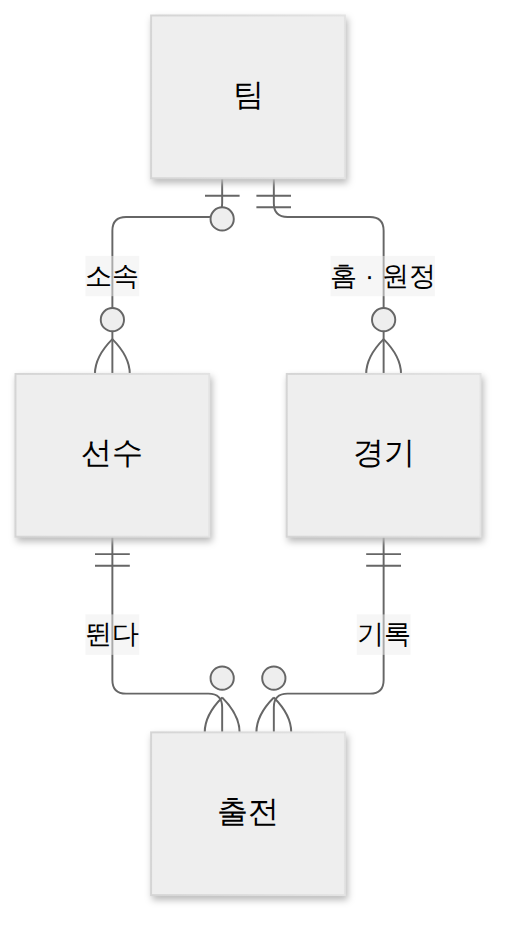
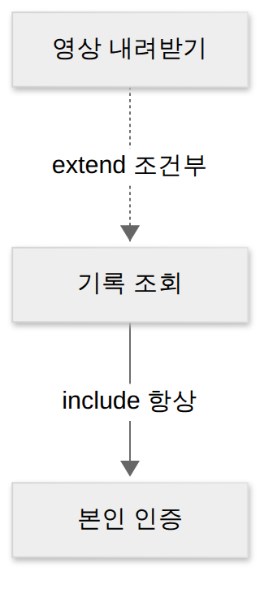

D043 · 신입 선수 한 명이 들어오기까지 — 풋살 리그 ‘골모아’ 명단으로 꿰는 릴레이션·키·무결성·시스템 카탈로그
B3 오늘부터 2과목은 B3 논리 데이터베이스 설계로 넘어가요. 첫 주제는 관계 데이터 모델 — 표(릴레이션)의 생김새, 행 하나를 가리키는 키, 잘못된 값을 막는 무결성이에요. 릴레이션 구조와 키는 최근 20회 시험에 20회 모두, 무결성은 19회 나왔어요. 사실상 “매번 나오는 문제” 세 개를 한 번에 보는 날이에요. 예시는 동네 직장인 풋살 리그 ‘골모아’ 하나로 갑니다. 시즌을 앞두고 운영자가 엑셀 명단을 DB로 옮기는데, 신입 선수 한 명이 등록되기까지 거치는 관문이 곧 오늘의 장면이에요.
- 릴레이션의 특징(튜플 유일 · 무순서, 속성 무순서 · 원자값)에서 틀린 설명을 고르고, 표를 보고 차수 · 카디널리티를 셀 수 있다
- 슈퍼키 · 후보키 · 기본키 · 대체키 · 외래키를 유일성 · 최소성과 포함 관계로 구별할 수 있다
- 개체 · 참조 · 도메인 · 사용자 정의 · 키 무결성을 구별하고 가짜 무결성 이름을 걸러낼 수 있다
- 시스템 카탈로그가 DBMS가 관리하는 메타데이터이고 사용자는 조회만 한다는 점을 설명할 수 있다
1부 (약 29분)
2부 (약 23분)
0. 왜 엑셀 명단으로는 안 되나
골모아 운영자의 엑셀 명단에는 지난 시즌 사고가 그대로 남아 있어요. 같은 선수가 두 줄로 등록돼 골이 둘로 나뉘었고, “새벽 FC”와 “새벽FC”가 다른 팀처럼 집계됐고, 누군가 골 수 칸에 −1을 적었어요. 엑셀은 이 중 어느 것에도 경고하지 않아요. 셀은 그냥 셀이니까요. ‘김민수’가 두 줄 있어도 엑셀은 아무 말 안 해요. 심판이 호루라기를 불게 하려면 DB가 필요해요.
관계형 DB는 “이 열에는 이런 값만”, “이 열은 겹치면 안 됨”, “이 번호는 저 표에 실제로 있어야 함” 같은 규칙을 표 정의에 함께 적어 두고, 규칙을 어기는 입력을 거절해요. 이 규칙들을 통틀어 무결성 제약이라고 해요. 그런데 규칙을 말하려면 먼저 표의 각 부분을 부를 이름(튜플 · 속성 · 도메인)과, 행 하나를 가리킬 방법(키)이 있어야 해요. 그래서 오늘은 구조 → 키 → 무결성 → 카탈로그 순서로 가요.
D029(10/31)에서 CREATE TABLE과 제약조건 문법을 한 번 봤어요. 오늘은 그 문법 뒤에 있는 이론 용어가 중심이고, 그때 짧게 넘어간 슈퍼키 · 대체키 · 무결성 다섯 종류를 길게 다뤄요. 아래 실행 상자는 모두 같은 골모아 DB(팀 4 · 선수 7 · 경기 2 · 출전 6행)에서 돌아가고, 실행할 때마다 처음 상태로 돌아가니 마음껏 망가뜨려도 돼요.

1. 장면 1 — 명단은 릴레이션이다 기출 20회
앞에서 골모아 DB를 네 개의 표로 나눴어요. 이제 그 표를 시험 용어로 부를 차례예요. 이 용어들은 1970년 IBM의 연구자 에드거 코드(E. F. Codd)가 제안한 관계 데이터 모델에서 나왔어요. 그 전의 계층형 · 네트워크형 DB는 데이터를 포인터로 이어진 트리나 그물로 저장해서, 프로그램이 저장 경로를 알아야만 원하는 값을 찾을 수 있었어요. 코드는 “모든 데이터를 행과 열로 된 표 하나의 모양으로 보이게 하고, 찾는 방법은 수학(집합 · 논리)으로 정하자”고 제안했어요.
릴레이션 (Relation)
정의: 릴레이션은 데이터를 행과 열로 된 2차원 표 형태로 표현한 것으로, 관계 데이터 모델에서 데이터를 담는 유일한 구조예요. 골모아의 팀 · 선수 · 경기 · 출전이 각각 하나의 릴레이션이에요. 수학에서 온 말이라 “관계”라는 이름이 붙었지만, 표와 표 사이의 관계(relationship)가 아니라 표 자체를 가리킨다는 점이 처음엔 헷갈려요.
책에서는 여기에 식별자라는 말도 함께 써요. 식별자는 여러 릴레이션 가운데 각 릴레이션을 서로 구별하게 해 주는 논리적 개념, 즉 릴레이션의 이름표예요. “선수”라는 이름이 붙어 있으니 “팀”과 헷갈리지 않는 거죠. 튜플 하나를 가리키는 수단은 장면 2의 키가 맡아요.
튜플 (Tuple) 기출 19회 · 속성 (Attribute) 기출 16회
정의: 튜플은 릴레이션의 행 하나, 즉 서로 관련된 속성 값들의 모임이에요. 선수 표에서 (101, 김민수, minsu9@golmoa.kr, FW, 1, 9)가 튜플 하나고, 현업 말로는 레코드예요. 속성(교재와 기출에서는 영어 그대로 읽은 “애트리뷰트”라고도 써요)은 릴레이션의 열 하나로, 데이터를 구성하는 가장 작은 논리적 단위예요. 이름 · 포지션 · 팀번호가 속성이고, 파일 시스템의 필드(데이터 항목)에 해당해요.
시험에서는 “속성은 개체의 특성을 나타내는 가장 작은 논리 단위”라는 문장이 옳은 설명으로, “튜플은 가장 작은 단위”라는 문장이 바꿔치기한 선지로 나와요. 행은 여러 칸이 모인 것이니 더 쪼갤 수 있고, 칸(속성 값) 하나가 가장 작다고 생각하면 안 틀려요.
도메인 (Domain) 기출 18회
정의: 도메인은 하나의 속성이 가질 수 있는 같은 타입의 원자값들의 집합이에요. 포지션 속성의 도메인은 {GK, DF, MF, FW} 네 값, 골수의 도메인은 0 이상의 정수예요. 자료형(INT, CHAR)보다 넓은 말이라고 보면 돼요. INT라는 자료형은 −1도 받지만, 골수의 도메인은 −1을 포함하지 않아요.
도메인이 왜 필요할까요? 포지션 칸에 ‘CF’가 들어오면 골키퍼가 “그 포지션은 우리 리그에 없는데요” 하고 문 앞에서 돌려보내야 하거든요. 도메인은 그 문 앞 입장 가능 명단이고, 장면 4의 도메인 무결성이 그 명단을 지키는 경비원이에요. SQL에서는 자료형 · CHECK · NOT NULL로 도메인을 표현해요.
도메인은 계산 문제로도 나와요. 속성마다 도메인 크기가 정해져 있으면, 만들 수 있는 튜플의 최대 개수는 각 도메인 크기의 곱이에요. 포지션(4가지) × 주발(왼발 · 오른발, 2가지)이면 (포지션, 주발) 조합은 최대 8가지예요. 실제 릴레이션은 그중 일부만 담고 있어요.
두 상자를 비교하면 7행이 4행(GK · DF · MF · FW)으로 줄어요. 선수 7명 모두 도메인 네 값 중 하나를 쓰고 있어서, 중복을 지우면 도메인 크기와 같아졌어요. “SELECT와 SELECT DISTINCT 결과의 튜플 수를 각각 쓰라”는 문제는 이렇게 같은 값이 반복되는 열을 골라 내요.
차수 (Degree) 기출 11회 · 카디널리티 (Cardinality) 기출 13회
정의: 차수는 한 릴레이션에 있는 속성(열)의 수, 카디널리티는 튜플(행)의 수예요. 선수 표는 속성이 선수번호 · 이름 · 이메일 · 포지션 · 팀번호 · 등번호 여섯이라 차수 6, 선수가 7명이라 카디널리티 7이에요. 카디널리티는 선수 인원(세로로 센 행), 차수는 명찰에 적힌 항목 수(가로로 센 열)로 떠올리면 돼요.
두 숫자는 성격이 달라요. 차수는 표를 설계할 때 정해져서 ALTER TABLE로 열을 추가하지 않는 한 그대로고, 카디널리티는 INSERT · DELETE를 할 때마다 바뀌어요. 그래서 차수는 스키마의 성질, 카디널리티는 인스턴스의 성질이에요. 후보키가 몇 개인지는 둘 다와 상관이 없어요.
스키마와 인스턴스
정의: 릴레이션 스키마는 릴레이션의 이름과 속성 이름들로 이루어진 구조(틀)이고, 릴레이션 인스턴스는 어느 한 시점에 그 틀에 실제로 들어 있는 튜플들의 집합이에요. 선수(선수번호, 이름, 이메일, 포지션, 팀번호, 등번호)가 스키마, 오늘 밤 기준 7명의 명단이 인스턴스예요. 스키마를 내포(intension), 인스턴스를 외연(extension)이라고도 불러요.
릴레이션 스키마와 인스턴스를 골모아 시즌으로 보면 이래요. 시즌 내내 명단의 틀은 그대로지만, 10월 개막 때 5명이던 명단이 11월에 7명이 되고, 팀이 해체되면 소속 값이 바뀌어요. “릴레이션은 시간에 따라 변한다”는 설명이 옳은 이유가 이거예요 — 변하는 건 인스턴스 쪽이에요.
릴레이션의 특징
릴레이션은 그냥 표처럼 보이지만, 수학의 집합에서 나왔기 때문에 엑셀 표에는 없는 성질이 있어요. 집합은 같은 원소를 두 번 담지 않고 원소 사이에 순서가 없죠. 그래서 릴레이션의 튜플도 서로 달라야 하고, 순서가 없어요. 속성 쪽도 마찬가지로 순서가 의미 없고, 한 칸에는 더 쪼갤 수 없는 값 하나만 들어가요.
순서가 없다는 말은 “1번째 행”이라는 개념이 이론상 없다는 뜻이에요. 화면에 보이는 순서는 ORDER BY를 쓰거나 DBMS가 읽은 순서일 뿐이에요. 아래 상자를 실행하면 같은 7명이 뒤집힌 순서로 나오는데, 이것도 똑같은 릴레이션이에요.
한 장 요약 — 시험의 “옳은 설명 / 틀린 설명” 짝이에요.
| 성질 | 옳은 설명 | 단골 틀린 설명 |
|---|---|---|
| 튜플의 유일성 | 모든 튜플은 서로 다르다(중복 튜플 없음) | 같은 튜플이 여러 번 있을 수 있다 |
| 튜플의 무순서 | 튜플 사이에 순서가 없다 | 튜플 사이에는 순서가 있다 |
| 속성의 무순서 | 속성 사이에 순서가 없다(열 순서를 바꿔도 같은 릴레이션) | 속성의 순서가 바뀌면 다른 릴레이션 |
| 속성의 원자성 | 속성 값은 더 쪼갤 수 없는 원자값 | 한 칸에 여러 값(전화번호 두 개)을 넣을 수 있다 |
| 속성 이름 | 한 릴레이션 안에서 속성 이름은 유일 | 같은 이름의 속성이 한 릴레이션에 둘 이상 있을 수 있다 |
| 시간에 따른 변화 | 튜플은 삽입 · 삭제로 계속 바뀐다(인스턴스가 변함) | 릴레이션은 한 번 만들면 내용이 고정 |
2. 장면 2 — 이 선수는 누구인가: 키 기출 20회
장면 1에서 릴레이션의 튜플은 서로 달라야 한다고 했어요. 그런데 “다르다”를 무엇으로 확인할까요? 골모아에는 김민수가 두 명(FW 101, GK 103)이에요. 운영자가 “김민수 골 하나 추가”라고 하면 DB는 누구에게 더해야 할지 몰라요. 튜플 하나를 정확히 가리킬 수 있는 속성(또는 속성 묶음)이 필요하고, 그것이 키(Key)예요.
유일성과 최소성 기출 10회
정의: 키가 갖춰야 할 두 가지 성질이에요. 유일성은 그 속성 값만으로 모든 튜플을 서로 구별할 수 있는 성질, 최소성은 키를 이루는 속성 중 하나라도 빼면 유일성이 깨지는, 즉 꼭 필요한 속성만으로 이루어진 성질이에요. 키의 종류는 결국 이 두 성질을 만족하느냐로 갈려요.
최소성이 왜 필요할까요? {선수번호, 이름}도 선수를 구별하긴 해요. 하지만 이름은 군더더기라, 이름이 바뀌면 멀쩡한 키 값이 바뀌어 버려요. 유니폼 번호에 이름 · 혈액형까지 줄줄이 적은 과잉 명찰보다, 딱 필요한 만큼만 적은 명찰이 오래가요.
결과는 7 · 6 · 7이에요. 이름은 7명에 6가지뿐이라 유일성이 없고, 이메일은 7가지라 지금은 유일해요. 다만 키는 “지금 값이 안 겹친다”로 정하는 게 아니라 “앞으로도 겹칠 수 없다”는 규칙으로 정해요. 이메일은 가입할 때 중복을 막기로 했으니 키가 될 수 있고, 이름은 오늘 표에 동명이인이 없었더라도 내일 생길 수 있으니 키가 될 수 없어요. 키는 인스턴스 한 장이 아니라 스키마 수준의 약속이에요.
슈퍼키 (Super Key) 기출 11회
정의: 슈퍼키는 유일성은 만족하지만 최소성은 만족하지 않아도 되는 속성의 집합이에요. 튜플을 구별할 수만 있으면 군더더기가 붙어 있어도 슈퍼키예요. {선수번호, 이름}, {이메일, 포지션}, 그리고 여섯 속성 전부를 묶은 집합도 슈퍼키예요. 튜플이 서로 다르니 전 속성 집합은 언제나 슈퍼키예요.
슈퍼키를 따로 배우는 이유는 후보키를 정의하기 위해서예요. 슈퍼키 가운데 더 줄일 수 없는 것, 즉 최소 슈퍼키가 후보키예요. 시험에서는 “유일성은 만족하지만 최소성은 만족하지 못하는 키”라는 설명을 주고 이름을 고르게 해요. 답은 슈퍼키, 오답 선지는 후보키 · 대체키 · 외래키예요.
후보키 (Candidate Key) 기출 19회
정의: 후보키는 튜플을 유일하게 식별할 수 있는 속성들의 부분집합으로, 유일성과 최소성을 모두 만족하는 키예요. 이름 그대로 “기본키가 될 수 있는 후보”이고, 한 릴레이션에 여러 개 있을 수 있어요. 선수 표에서는 {선수번호}와 {이메일}이 후보키예요. 모든 릴레이션에는 후보키가 적어도 하나 있어요 — 최악의 경우 전 속성 집합에서 줄여 나가면 반드시 하나가 남으니까요.
후보키는 나중에 정규화(D049 · D050)에서 다시 주인공이 돼요. “모든 결정자가 후보키이면 BCNF”라는 정의가 바로 이 후보키 개념 위에 서 있어요. 여기서는 “후보키를 알면 그 튜플의 나머지 속성 값이 전부 정해진다”는 것만 기억해 두세요.
| 선수번호 | 이름 | 이메일 | 포지션 |
|---|---|---|---|
| 101 | 김민수 | minsu9@ | FW |
| 102 | 이서연 | seoyeon@ | MF |
| 103 | 김민수 | minsu.gk@ | GK |
| 104 | 박지후 | jihoo@ | DF |
| 105 | 최하린 | harin@ | FW |
| 106 | 정우진 | woojin@ | MF |
| 107 | 한도윤 | doyun@ | FW |
선수 7명(이메일은 @ 앞만 보여요). 질문은 하나예요. “어떤 열(또는 열 묶음)을 알면 선수 한 명이 딱 정해지나?” 열 조합을 하나씩 대 보며 유일성과 최소성을 차례로 검사해요.
| 선수번호 | 이름 | 이메일 | 포지션 |
|---|---|---|---|
| 101 | 김민수 | minsu9@ | FW |
| 102 | 이서연 | seoyeon@ | MF |
| 103 | 김민수 | minsu.gk@ | GK |
| 104 | 박지후 | jihoo@ | DF |
| 105 | 최하린 | harin@ | FW |
| 106 | 정우진 | woojin@ | MF |
| 107 | 한도윤 | doyun@ | FW |
{이름}: 101과 103이 둘 다 김민수예요. 이름만으로는 두 사람을 가를 수 없으니 유일성 ✗. 이름은 어떤 키도 될 수 없어요. 지금 표에 동명이인이 없었더라도, 앞으로 생길 수 있으니 마찬가지예요.
| 선수번호 | 이름 | 이메일 | 포지션 |
|---|---|---|---|
| 101 | 김민수 | minsu9@ | FW |
| 102 | 이서연 | seoyeon@ | MF |
| 103 | 김민수 | minsu.gk@ | GK |
| 104 | 박지후 | jihoo@ | DF |
| 105 | 최하린 | harin@ | FW |
| 106 | 정우진 | woojin@ | MF |
| 107 | 한도윤 | doyun@ | FW |
{이메일}: 가입할 때 중복을 막아 두었으니 7개가 전부 달라요 → 유일성 ✓. 속성이 하나뿐이라 더 뺄 것이 없으니 최소성 ✓. 후보키 하나 발견. {선수번호}도 같은 이유로 후보키예요.
| 선수번호 | 이름 | 이메일 | 포지션 |
|---|---|---|---|
| 101 | 김민수 | minsu9@ | FW |
| 102 | 이서연 | seoyeon@ | MF |
| 103 | 김민수 | minsu.gk@ | GK |
| 104 | 박지후 | jihoo@ | DF |
| 105 | 최하린 | harin@ | FW |
| 106 | 정우진 | woojin@ | MF |
| 107 | 한도윤 | doyun@ | FW |
{선수번호, 이름}: 선수번호가 이미 모두 달라서 유일성은 ✓. 그런데 이름을 빼도 여전히 유일해요 → 최소성 ✗. 유일성만 만족하는 이런 조합이 슈퍼키예요. {이메일, 포지션}도 같은 처지예요.
| 열 조합 | 유일성 | 최소성 | 판정 |
|---|---|---|---|
| {이름} | ✗ | — | 키 아님 |
| {이메일} | ✓ | ✓ | 후보키 |
| {선수번호} | ✓ | ✓ | 후보키 |
| {선수번호, 이름} | ✓ | ✗ | 슈퍼키 |
정리하면 후보키가 둘이에요. 둘 다 기본키 자격이 있지만, 표마다 기본키는 하나만 정해요.
| 후보키 | 역할 |
|---|---|
| {선수번호} | 기본키 — 다른 표가 가리킬 대표 번호 |
| {이메일} | 대체키 — 자격은 있지만 뽑히지 않음 |
짧고 바뀌지 않는 선수번호를 기본키로 고르고, 이메일은 대체키로 남겨요. 이메일은 선수가 바꿀 수도 있어서 다른 표가 붙잡고 있기엔 불안하거든요.
기본키 (Primary Key) 기출 20회
정의: 기본키는 후보키 중에서 설계자가 골라 그 릴레이션의 대표 식별자로 정한 키예요. 기본키는 NULL이 될 수 없고 중복될 수 없어요. 이 규칙이 장면 4의 개체 무결성이에요. 다른 릴레이션이 이 표의 튜플을 가리킬 때도 기본키 값을 사용해요(외래키).
후보키가 여럿이면 어떤 기준으로 고를까요? 짧고, 값이 바뀌지 않고, 업무상 의미가 섞이지 않은 것이 좋아요. 이메일은 선수가 바꿀 수 있으니, 리그가 발급하는 선수번호가 기본키로 더 낫죠. 감독이 주장 완장을 한 명에게 채우는 것과 같아요. 기본키가 있다고 해서 모든 검색에 기본키를 써야 하는 건 아니에요. 이름으로도 얼마든지 검색할 수 있고, 기본키는 “한 명을 확실히 가리키는 방법”을 보장할 뿐이에요.
두 상자 모두 오류예요. 첫째는 선수_pkey 제약의 중복 위반, 둘째는 선수번호 열의 NOT NULL 위반이에요. PRIMARY KEY 한 단어가 “유일 + NOT NULL”을 한꺼번에 걸어 두기 때문이에요.
대체키 (Alternate Key)
정의: 대체키는 후보키가 둘 이상일 때 기본키로 선택되지 않은 나머지 후보키예요. 선수 표의 {이메일}이 대체키예요. 완장은 못 받았지만 자격은 충분한 벤치 멤버랄까요. 대체키도 후보키라 유일성과 최소성을 모두 만족하고, SQL에서는 보통 UNIQUE 제약으로 표현해요.
자주 보이는 틀린 정의가 “대체키는 슈퍼키 중 기본키를 제외한 것”이에요. 슈퍼키에는 {선수번호, 이름} 같은 군더더기 조합도 들어 있으니, 거기서 기본키를 뺀다고 대체키가 되지 않아요. 출발점은 언제나 후보키예요. 공식처럼 쓰면 후보키 = 기본키 + 대체키예요.
복합키 — 출전 표
정의: 속성 하나로는 유일성이 안 나와서 두 개 이상의 속성을 묶어 만든 키를 복합키(연결키)라고 해요. 출전 표는 (경기번호, 선수번호)가 기본키예요. 경기번호만으로는 한 경기에 뛴 여러 선수를 못 가르고, 선수번호만으로는 한 선수가 뛴 여러 경기를 못 가르니, 둘을 묶어야 비로소 “이 경기의 이 선수”가 정해져요. 묶음에서 하나라도 빼면 유일성이 깨지니 최소성도 만족해요.
한 장 요약 — 열 조합별 판정이에요.
| 열 조합 | 유일성 | 최소성 | 판정 |
|---|---|---|---|
| {이름} | ✗ (김민수 둘) | — | 키 아님 |
| {선수번호} | ✓ | ✓ | 후보키 → 기본키 |
| {이메일} | ✓ | ✓ | 후보키 → 대체키 |
| {선수번호, 이름} | ✓ | ✗ (이름은 군더더기) | 슈퍼키 |
| {팀번호, 등번호} | ✓ (UNIQUE로 약속) | ✓ | 후보키(NULL 허용이라 기본키로는 부적합) |
| 출전의 {경기번호, 선수번호} | ✓ | ✓ | 복합 기본키 |
표의 {팀번호, 등번호}는 흥미로운 경우예요. 같은 팀 안에서 등번호가 겹치지 않게 약속했으니 키 자격이 있어 보이지만, 무소속 선수는 팀번호가 NULL이에요. 기본키는 NULL을 허용하지 않으니 이 조합은 기본키 후보로 쓰기 어렵고, UNIQUE 제약으로만 지켜요. 시험은 이런 세부까지 묻지 않지만, “기본키 = NULL 불가”를 다시 떠올리게 해 주는 예예요.
3. 장면 3 — 이적과 팀 해체: 외래키 · 참조 무결성 기출 14회
장면 2에서 팀과 선수에 각각 기본키가 생겼어요. 그런데 “김민수(101)는 번개FC 소속”이라는 사실은 어디에 적을까요? 선수 표에 팀명 ‘번개FC’를 글자로 적으면, 팀 이름이 바뀔 때 선수 행을 모두 고쳐야 하고 오타(‘번개 FC’)도 막을 수 없어요. 대신 팀의 기본키 번호(1)를 적고 “이 번호는 팀 표에 있는 번호여야 한다”고 약속해요. 이 약속이 걸린 열이 외래키예요.
외래키 (Foreign Key) 기출 16회
정의: 외래키는 다른 릴레이션의 기본키를 참조하는 속성(또는 속성 집합)이에요. 선수.팀번호가 팀.팀번호를 참조하는 외래키고, 출전.선수번호와 출전.경기번호도 외래키예요. 기본키가 있는 쪽을 참조되는 릴레이션(부모), 외래키가 있는 쪽을 참조하는 릴레이션(자식)이라 불러요. 엄밀히는 기본키가 아닌 후보키(UNIQUE 열)를 참조해도 되지만, 시험은 “기본키를 참조”로 정의해요.
외래키는 기본키와 성질이 달라요. 중복이 가능해요 — 번개FC 소속 선수가 여럿이니 팀번호 1이 여러 번 나와요. 이게 바로 1:N 관계예요. 그리고 NULL도 가능해요. 정우진(106)처럼 아직 팀이 없는 선수는 팀번호를 비워 둬요. 자기 자신을 참조하는 외래키도 있어요(D035의 멘토 번호처럼). 외래키 덕분에 표를 나눠 저장하고도 조인으로 다시 이어 붙일 수 있어요.
참조 무결성 — 없는 것을 가리키지 마라
정의: 참조 무결성은 외래키 값은 NULL이거나, 참조되는 릴레이션의 기본키 값 중 하나여야 한다는 규칙이에요. 한마디로 “없는 것을 가리키지 마라”예요. 팀번호 99를 적은 선수는 존재하지 않는 팀을 가리키는 유령 선수가 되는데, 심판(참조 무결성)이 경기장 입구에서 돌려보내요.
이 규칙이 없으면 어떻게 될까요? 조인 결과에서 유령 선수가 조용히 빠지거나, 팀별 집계가 실제 인원과 안 맞는데도 오류 하나 없이 결과가 나와요. 틀린 숫자가 오류 메시지 없이 나오는 게 가장 무서운 버그죠. 참조 무결성은 입력 순간에 막아서 이런 일을 원천 차단해요.
첫 상자는 선수_팀번호_fkey 위반 오류, 둘째 상자는 성공해서 무소속이 정우진 · 나신입 두 명이 돼요. 외래키는 “가리키려면 진짜를 가리켜라, 아니면 비워 둬라”예요.
부모가 사라질 때 — 참조 동작
참조 무결성은 자식이 들어올 때만이 아니라 부모가 지워지거나 바뀔 때도 깨질 수 있어요. 해돋이FC가 해체되면 한도윤(107)의 팀번호 4가 갑자기 없는 팀을 가리키게 되죠. 그래서 외래키를 정의할 때 “부모 행이 지워지면 자식은 어떻게 할지”를 함께 정해요. 이것을 참조 동작(ON DELETE · ON UPDATE)이라 해요.
선택은 데이터의 의미에 따라요. 팀이 해체돼도 선수는 리그에 남아야 하니 선수.팀번호는 SET NULL이 맞아요. 반대로 출전 기록은 선수가 리그에서 완전히 삭제되면 의미가 없으니 출전.선수번호는 CASCADE로 함께 지워요. 경기는 기록이 남아야 하니 팀 삭제를 거부(NO ACTION)해요. CASCADE는 “팀이 해체되면 명단까지 같이 정리”, SET NULL은 “팀은 사라져도 선수는 FA로 남는다”, RESTRICT는 “선수가 있으니 해체는 안 됩니다”예요.
한 장 요약 — 네 가지 참조 동작이에요.
| 동작 | 부모 행을 지우면 | 골모아에서 쓴 곳 |
|---|---|---|
| NO ACTION · RESTRICT | 자식이 남아 있으면 삭제 거부(기본값) | 경기.홈팀 · 원정팀 → 팀 |
| CASCADE | 자식 행도 함께 삭제(연쇄) | 출전.선수번호 → 선수 |
| SET NULL | 자식의 외래키를 NULL로 | 선수.팀번호 → 팀 |
| SET DEFAULT | 자식의 외래키를 기본값으로 | (오늘은 안 씀) |
| 팀번호 | 팀명 |
|---|---|
| 1 | 번개FC |
| 2 | 새벽FC |
| 3 | 노을FC |
| 4 | 해돋이FC |
| 선수번호 | 이름 | 팀번호 |
|---|---|---|
| 107 | 한도윤 | 4 |
리그 운영자가 DELETE FROM 팀 WHERE 팀번호 = 4;를 실행해요. 해돋이FC에는 한도윤(107)이 소속돼 있어요. 부모 행이 사라지면 자식 행의 외래키 4는 어디를 가리키게 될까요?
| 팀번호 | 팀명 |
|---|---|
| 1 | 번개FC |
| 2 | 새벽FC |
| 3 | 노을FC |
| 4 | 해돋이FC |
✗ 오류: 선수가 팀 4를 참조하고 있어 삭제할 수 없음
① 외래키에 아무 동작도 정하지 않았다면(기본값 NO ACTION, 또는 RESTRICT) DBMS는 삭제 자체를 거부해요. “선수가 남아 있으니 팀부터 지울 순 없습니다.”
| 팀번호 | 팀명 |
|---|---|
| 1 | 번개FC |
| 2 | 새벽FC |
| 3 | 노을FC |
| 4 | 해돋이FC |
| 선수번호 | 이름 | 팀번호 |
|---|---|---|
| 107 | 한도윤 | NULL |
② 오늘 seed처럼 ON DELETE SET NULL이면 팀은 지워지고 한도윤의 팀번호가 NULL이 돼요. 팀은 사라져도 선수는 FA(무소속)로 남아요.
| 팀번호 | 팀명 |
|---|---|
| 1 | 번개FC |
| 2 | 새벽FC |
| 3 | 노을FC |
| 4 | 해돋이FC |
| 선수번호 | 이름 | 팀번호 |
|---|---|---|
| 107 | 한도윤 | 4 |
③ 만약 ON DELETE CASCADE였다면 팀과 함께 한도윤 행도 지워져요. 리그 기록에서 선수까지 통째로 사라지니, 선수 명단에는 너무 과격한 선택이에요. 대신 선수 → 출전처럼 “부모 없이는 의미 없는 자식”에는 잘 맞아요.
| 팀번호 | 팀명 |
|---|---|
| 1 | 번개FC |
| 2 | 새벽FC |
| 3 | 노을FC |
| 4 | 해돋이FC |
✗ 오류: 경기(홈팀 · 원정팀)가 팀 2를 참조
④ 새벽FC(2)를 지우려 하면 이번엔 경기 표가 막아서요. 경기의 홈팀 · 원정팀 외래키에는 동작을 정하지 않았으니 NO ACTION, 게다가 NOT NULL이라 비워 둘 수도 없어요. 같은 DELETE라도 어떤 자식이 붙어 있느냐에 따라 결말이 달라요.
결과는 차례로 오류(경기가 참조 중), 107의 팀번호 NULL, 출전 6 → 4행이에요. 같은 DELETE라도 외래키에 정해 둔 동작에 따라 결말이 셋으로 갈렸어요. D029에서 본 DROP TABLE … CASCADE도 같은 생각이에요 — 지우는 대상에 매달린 것까지 연쇄로 지운다는 뜻이죠.
4. 장면 4 — 입력 검문소: 무결성 다섯 종류 기출 19회
장면 3에서 참조 무결성 하나를 자세히 봤어요. 사실 신입 선수 한 명이 저장되기까지 거치는 관문은 다섯이에요. 하나씩 이름을 붙이고, 각 관문이 SQL에서 무엇으로 구현되는지 연결해 볼게요. 그 전에 “무결성”이라는 말부터 정리해요.
무결성과 무결성 규정
정의: 무결성(Integrity)은 데이터베이스에 저장된 값이 현실 세계의 실제 값과 일치하는 정확성이에요. 골 2개를 넣은 선수의 기록이 DB에도 2로, 존재하는 팀 소속으로 적혀 있어야 무결성이 지켜진 거예요. 이 정확성을 지키기 위해 미리 정해 둔 규칙을 무결성 규정(Integrity Rule)이라 하고, 규정이 다루는 대상은 크게 도메인(값), 키(식별), 종속성(속성 사이의 관계)이에요. 릴레이션을 조작할 때 지켜야 할 이런 의미적 관계를 명세한 것을 릴레이션 무결성 규정이라고 불러요.
개체 무결성 — 기본키는 비거나 겹치지 않는다 기출 13회
정의: 개체 무결성은 기본키를 구성하는 속성은 NULL 값이나 중복 값을 가질 수 없다는 규칙이에요. 복합 기본키라면 구성 속성 하나하나가 모두 NULL이면 안 돼요 — 출전의 (경기번호, 선수번호)에서 선수번호만 비워 두는 것도 위반이에요. 기본키는 튜플을 구별하는 유일한 수단인데, 그 값이 비어 있으면 그 튜플은 “누구인지 모르는 행”이 되니까요.
SQL에서는 PRIMARY KEY 제약이 개체 무결성을 지켜요. 장면 2에서 선수번호 101 중복과 선수번호 NULL이 둘 다 거부된 게 바로 이 관문이에요.
도메인 무결성 — 입장 명단 밖의 값은 돌려보내기
정의: 도메인 무결성은 각 속성 값이 그 속성에 정의된 도메인에 속한 값이어야 한다는 규칙이에요. 포지션은 네 값 중 하나, 골수는 0 이상이어야 해요. 장면 1의 도메인이 “허용 값 목록”이라면, 도메인 무결성은 그 목록 밖의 값을 막는 규칙이에요. 자료형, CHECK, NOT NULL, DEFAULT가 이 관문의 도구예요.
사용자 정의 무결성 — 우리 리그만의 규칙
정의: 사용자 정의 무결성은 속성 값들이 그 조직의 업무 규칙(비즈니스 규칙)에 맞아야 한다는 규칙이에요. 도메인 무결성이 “이 열 하나에 올 수 있는 값”이라면, 사용자 정의 무결성은 “우리 리그에서는 이래야 한다”는 의미 규칙이에요. 골모아의 예는 “홈팀과 원정팀은 같을 수 없다”예요. 열 하나만 봐서는 판단할 수 없고 두 열을 함께 봐야 하죠.
구현 도구는 여러 열을 보는 CHECK, 다른 표까지 봐야 하는 복잡한 규칙이면 트리거예요. 예를 들어 “한 팀에 선수는 12명까지”는 다른 행들을 세어야 하니 CHECK로는 안 되고 트리거로 만들어요. 트리거는 삽입 · 삭제 · 갱신 같은 이벤트가 생길 때마다 자동으로 실행되는 절차형 SQL이에요.
키 무결성 — 같은 키 값은 한 번만
정의: 키 무결성은 한 릴레이션에는 같은 키 값을 가진 튜플이 둘 이상 있을 수 없다는 규칙이에요. 장면 1의 “튜플은 서로 다르다”를 키로 보장하는 규칙이라고 보면 돼요. 기본키뿐 아니라 대체키(UNIQUE)에도 적용돼서, 이메일 중복이나 같은 팀 안의 등번호 중복을 막아요. SQL에서는 UNIQUE 제약이 이 관문이에요.
| 선수번호 | 이름 | 포지션 | 팀번호 | 등번호 |
|---|---|---|---|---|
| 101 | 나신입 | CF | 99 | 9 |
신입 나신입 선수가 가입 신청서를 냈어요. 운영자가 엑셀 버릇대로 대충 적은 값이에요. INSERT 한 줄이 DB 안으로 들어가기 전에 다섯 관문을 차례로 만나요.
| 선수번호 | 이름 | 포지션 | 팀번호 | 등번호 |
|---|---|---|---|---|
| 101 → 108 | 나신입 | CF | 99 | 9 |
관문 1 개체 무결성: 기본키 선수번호 101은 김민수가 이미 쓰고 있어요. 기본키는 중복도 NULL도 안 되니 거부 → 빈 번호 108로 고쳐요.
| 선수번호 | 이름 | 포지션 | 팀번호 | 등번호 |
|---|---|---|---|---|
| 108 | 나신입 | CF → FW | 99 | 9 |
관문 2 도메인 무결성: 포지션 도메인은 GK · DF · MF · FW 네 값뿐이에요. CF(센터 포워드)는 축구에선 흔해도 이 리그 목록에 없어요 → FW로 고쳐요.
| 선수번호 | 이름 | 포지션 | 팀번호 | 등번호 |
|---|---|---|---|---|
| 108 | 나신입 | FW | 99 → 1 | 9 |
관문 3 참조 무결성: 팀번호 99인 팀은 없어요. 외래키는 NULL이거나 팀 표에 실제로 있는 번호여야 하니 거부 → 번개FC(1)로 고쳐요.
| 선수번호 | 이름 | 포지션 | 팀번호 | 등번호 |
|---|---|---|---|---|
| 108 | 나신입 | FW | 1 | 9 → 11 |
관문 4 키 무결성(UNIQUE): 번개FC에서 등번호 9는 김민수(101)가 달고 있어요. (팀번호, 등번호) 조합은 겹치면 안 되니 거부 → 11번으로 고쳐요. 노을FC의 9번과는 상관없어요, 조합이 다르니까요.
| 선수번호 | 이름 | 포지션 | 팀번호 | 등번호 |
|---|---|---|---|---|
| 108 | 나신입 | FW | 1 | 11 |
관문 5 사용자 정의 무결성(리그만의 업무 규칙)까지 통과하면 드디어 저장돼요. 이 리그의 업무 규칙은 경기 표의 “홈팀과 원정팀은 달라야 한다”가 대표예요. 다섯 번 거절당한 신청서가 한 번에 들어간 셈이에요.
한 장 요약 — 다섯 관문을 지키는 대상과 도구예요.
| 무결성 | 지키는 규칙 | 골모아에서 막은 것 | SQL 도구 |
|---|---|---|---|
| 개체 | 기본키는 NULL · 중복 불가 | 선수번호 101 중복 · 빈 선수번호 | PRIMARY KEY |
| 참조 | 외래키는 NULL 또는 부모 기본키 값 | 없는 팀 99 | FOREIGN KEY · REFERENCES |
| 도메인 | 값은 속성의 도메인 안 | 포지션 CF · 골수 −1 | 자료형 · CHECK · NOT NULL · DEFAULT |
| 사용자 정의 | 조직의 업무 규칙 | 홈팀 = 원정팀 | 여러 열 CHECK · 트리거 |
| 키 | 같은 키 값의 튜플 금지 | 번개FC 등번호 9 중복 | UNIQUE |
무결성과 보안은 다르다
정의: 둘 다 데이터를 지키지만 막는 상대가 달라요. 무결성은 권한을 가진 정당한 사용자가 데이터를 갱신할 때 생기는 실수 · 잘못된 값으로부터 데이터를 보호하고, 보안은 권한이 없는 사용자의 불법적인 접근 · 변경 · 파괴로부터 데이터를 보호해요. 무결성은 경기 기록원이 점수를 잘못 쓰지 않게, 보안은 관중이 기록판에 못 올라가게 하는 일이에요. 무결성은 제약조건으로, 보안은 GRANT · REVOKE 같은 권한과 인증으로 지켜요.
가짜 무결성 이름 걸러내기 기출 12회
시험에는 이름만 그럴듯한 대타 선수, 즉 가짜 무결성 이름이 자주 뛰어요. “기본키는 NULL · 중복 불가”라는 설명을 주고 선지에 보안 무결성 · 정보 무결성 · 고유 무결성 · 널 제약성 · 키 제약성을 섞어 두는 식이에요. 이런 이름은 정식 무결성 분류에 없어요. 정식 다섯(개체 · 참조 · 도메인 · 사용자 정의 · 키)만 확실히 외워 두면, 처음 보는 이름은 그냥 지워도 돼요.
반대로 무결성이라는 단어가 나왔다고 다 무결성 5종 문제는 아니에요. 분산 DB의 “장애 투명성” 설명에 “데이터 무결성이 보장된다”는 말이 들어가도 그 문제는 투명성 종류를 묻는 것이고, DCL의 기능(무결성 유지 · 보안 · 병행 제어)을 묻는 문제에서 무결성은 DCL 기능의 하나일 뿐이에요. 단어보다 질문이 무엇을 묻는지를 먼저 보세요.
5. 장면 5 — 심판의 장부: 시스템 카탈로그 기출 10회
장면 4에서 INSERT가 들어올 때마다 DBMS가 다섯 관문을 검사했어요. DBMS는 “선수번호가 기본키”라는 걸 어떻게 알까요? CREATE TABLE을 실행한 순간, DBMS가 그 정의를 자기 장부에 적어 두었기 때문이에요. 이 장부가 시스템 카탈로그예요.
정의: 시스템 카탈로그(System Catalog)는 DBMS가 스스로 생성하고 유지하는, 데이터베이스에 저장된 모든 객체에 대한 정의와 명세를 담은 시스템 데이터베이스예요. 표 · 열 · 자료형 · 제약조건 · 인덱스 · 뷰 · 사용자 권한 같은 정보가 들어 있어요. “데이터에 관한 데이터”라서 카탈로그에 담긴 내용을 메타데이터, 카탈로그 자체를 데이터 사전(Data Dictionary)이라고도 불러요. D032에서 본 내용 그대로예요.
카탈로그도 결국 표 모양으로 저장돼서, 사용자는 평범한 SELECT로 읽을 수 있어요. 하지만 INSERT · UPDATE · DELETE로 직접 고칠 수는 없어요. 심판의 반칙 노트는 심판이 직접 써요. 선수가 고쳐 쓰면 경기가 성립하지 않죠. 카탈로그를 사용자가 마음대로 바꾸면 실제 표 구조와 장부가 어긋나서 DBMS가 검사를 제대로 할 수 없어요. 그래서 구조를 바꾸고 싶으면 DDL(ALTER · DROP)을 실행하고, 장부 갱신은 DBMS에 맡겨요.
첫 상자는 6행 — 장면 1에서 센 차수 6과 같아요. 둘째 상자는 다섯 제약(p 기본키 · f 외래키 · c CHECK · u UNIQUE 둘)이 나와요. 장면 4의 관문들이 장부의 행으로 적혀 있는 거예요. 셋째 상자는 오류예요. information_schema.columns는 카탈로그를 보기 좋게 보여 주는 뷰라서 지울 수 없어요.
여기서 뷰와 이어져요. 뷰는 실제 데이터를 따로 저장하지 않고 다른 표에서 계산해 보여 주는 가상 표였죠(D032). information_schema는 DBMS가 카탈로그 위에 만들어 둔 표준 뷰 모음이라, 사용자는 DBMS마다 다른 내부 카탈로그 구조를 몰라도 같은 SQL로 메타데이터를 조회할 수 있어요. 카탈로그는 DBMS가 쓰는 장부, 뷰는 그 장부를 읽기 좋게 펼친 창이에요.
CREATE TABLE 선수 (
선수번호 INT PRIMARY KEY, …
포지션 CHAR(2) CHECK (…),
팀번호 INT REFERENCES 팀 …,
UNIQUE (팀번호, 등번호) );운영자가 선수 표를 만드는 DDL을 실행해요. 운영자가 쓴 건 이 한 문장뿐이에요.
| 카탈로그 표 | 새로 적힌 것 |
|---|---|
| 표 목록 | 선수 |
| 열 목록 | 선수번호 · 이름 · 이메일 · 포지션 · 팀번호 · 등번호 |
DBMS는 문법과 권한을 확인한 뒤, 카탈로그의 표 목록에 “선수”, 열 목록에 여섯 열의 이름 · 자료형 · 순서를 스스로 적어요.
| 제약 이름 | 종류 | 어떤 무결성 |
|---|---|---|
| 선수_pkey | p 기본키 | 개체 |
| 선수_팀번호_fkey | f 외래키 | 참조 |
| 선수_포지션_check | c 검사 | 도메인 |
| 선수_이메일_key | u 유일 | 키 |
| 선수_팀번호_등번호_key | u 유일 | 키 |
제약조건도 하나하나 이름을 붙여 카탈로그에 적어요. 아까 검문소의 관문들이 사실은 이 행들이에요. INSERT가 들어올 때마다 DBMS는 이 목록을 보고 검사해요.
| 제약 이름 | 종류 | 어떤 무결성 |
|---|---|---|
| 선수_pkey | p 기본키 | 개체 |
| 선수_팀번호_fkey | f 외래키 | 참조 |
| 선수_포지션_check | c 검사 | 도메인 |
사용자는 SELECT … FROM pg_constraint처럼 평범한 SQL로 이 장부를 읽을 수 있어요. 카탈로그도 표 모양이니까요.
| 제약 이름 | 종류 | 어떤 무결성 |
|---|---|---|
| 선수_pkey | p 기본키 | 개체 |
✗ 사용자의 직접 DELETE · UPDATE는 거부
하지만 장부에 직접 펜을 대는 건 안 돼요. 제약을 없애고 싶으면 ALTER TABLE … DROP CONSTRAINT 같은 DDL을 쓰고, 장부 수정은 DBMS가 해요.
6. 헷갈리는 짝 — 가르는 질문 한 장
앞 장면에서 하나씩 설명한 짝들을 모았어요. 왼쪽 질문에 “예”면 가운데, “아니오”면 오른쪽이에요.
| 가르는 질문 | 예 | 아니오 |
|---|---|---|
| 가로로 센 열의 수인가? | 차수(Degree) | 카디널리티(행의 수) |
| 특정 시점의 내용인가? | 인스턴스 | 스키마(틀) |
| 최소성까지 만족하나? | 후보키 | 슈퍼키(유일성만) |
| 후보키 중 뽑힌 대표인가? | 기본키 | 대체키 |
| 다른 표의 기본키를 가리키나? | 외래키(NULL · 중복 가능) | 기본키(NULL · 중복 불가) |
| 기본키의 규칙인가? | 개체 무결성 | 참조(외래키) · 도메인(값 범위) |
| 열 하나의 허용 값 문제인가? | 도메인 무결성 | 사용자 정의(업무 규칙, 여러 열) |
| 허가받은 사용자의 실수를 막나? | 무결성 | 보안(불법 접근) |
| DBMS가 스스로 갱신하나? | 시스템 카탈로그 | 사용자 테이블 |
그리고 오늘 장면을 한 번 더 꿰면 이래요.
| 장면 | 하는 일 | 시험 개념 | 결과물 |
|---|---|---|---|
| 1 | 명단을 표로 | 릴레이션 · 튜플 · 속성 · 도메인 · 차수 · 카디널리티 · 스키마/인스턴스 | 네 릴레이션 |
| 2 | 선수 가리기 | 유일성 · 최소성 · 슈퍼키 · 후보키 · 기본키 · 대체키 · 복합키 | 선수번호 기본키 |
| 3 | 이적 · 해체 | 외래키 · 참조 무결성 · CASCADE · SET NULL | 유령 선수 없음 |
| 4 | 입력 검문 | 개체 · 참조 · 도메인 · 사용자 정의 · 키 무결성, 무결성 vs 보안 | 신입 108 저장 |
| 5 | 장부 확인 | 시스템 카탈로그 · 메타데이터 · 데이터 사전 | 제약 5개 조회 |
내일 D044는 관계 대수예요. 오늘 센 차수 · 카디널리티가 “카티션 곱을 하면 차수는 더하고 카디널리티는 곱한다” 같은 계산으로 다시 나와요. 스키마 3계층과 E-R 모델은 D046에서 다뤄요.
7. 오답 복습 — 1과목 다섯 가지 다시 보기
오늘 범위와는 다른 1과목 내용이에요. 11/6 모의 세트에서 틀렸다가 11/10에 한 번 맞힌 문제들이고, 일주일이 지난 오늘 다시 확인해요. 골모아 앱을 만드는 개발팀이 겪는 장면으로 바꿔 설명할게요.
XP의 다섯 가치 (M02-1)
정의: XP(eXtreme Programming)는 짧은 주기의 릴리스와 짝 프로그래밍 · 테스트 주도 개발 같은 실천법으로 고객 요구 변화에 빠르게 대응하는 애자일 방법론이고, 그 바탕에 다섯 가치가 있어요 — 의사소통 · 단순성 · 피드백 · 용기 · 존중. 존중은 스크럼 가치에도 있지만 XP에도 분명히 들어 있어요. 지난번에 존중을 “스크럼 전용”으로 기억해서 틀렸어요.
반대로 가치처럼 들리지만 XP 가치가 아닌 말이 있어요. 애자일 선언은 “포괄적인 문서보다 작동하는 소프트웨어”를 더 가치 있게 여긴다고 했으니, 포괄적인 문서화는 애자일이 상대적으로 덜 중시하는 쪽이에요. 개발팀 벽에 붙일 가치를 고를 때 “문서를 빠짐없이”는 XP의 다섯 가치가 아니에요.
유스케이스의 포함과 확장 (M02-5)
정의: 유스케이스 다이어그램에서 포함(include)은 기준 유스케이스가 실행될 때 항상 함께 실행되는 유스케이스를 끌어 쓰는 관계이고, 확장(extend)은 특정 조건이 맞을 때만 추가 기능이 덧붙는 관계예요. 일반화는 “일반 → 구체” 상속 관계라서, 기능이 덧붙는 상황과는 의미가 달라요. 지난번에 조건부 추가를 일반화로 골랐어요.
골모아 앱으로 보면, “기록 조회”는 매번 “본인 인증”을 거치니 포함, 프리미엄 회원일 때만 “영상 내려받기”가 가능하면 확장이에요. 화살표 방향도 달라요. 포함은 기준 → 포함되는 쪽, 확장은 확장하는 쪽 → 기준 쪽으로 그려요.

객체지향 분석 방법론 (M02-6)
정의: 객체지향 분석 방법론은 요구사항을 객체 · 클래스 · 관계로 모델링하는 방법들이고, 만든 사람 이름이 그대로 방법론 이름이에요. 시험은 방법론마다 붙은 특징 한 마디를 묻기 때문에 그 한 마디를 짝지어 기억해야 해요. 지난번에 E-R 다이어그램 기반 방법론을 Rumbaugh로 골랐는데, Rumbaugh의 상징은 E-R이 아니라 객체 · 동적 · 기능 세 가지 모델링이에요.
| 방법론 | 특징 한 마디 |
|---|---|
| Coad-Yourdon | E-R 다이어그램으로 객체의 행위를 모델링 |
| Rumbaugh(OMT) | 객체 → 동적 → 기능 모델링 세 단계(그래픽 표기) |
| Booch | 미시적 · 거시적 개발 프로세스를 모두 사용 |
| Jacobson | 유스케이스를 강조 |
| Wirfs-Brock | 분석과 설계 구분 없이 고객 명세서에서 책임을 찾아 냄 |
파이프-필터 (M02-8)
정의: 파이프-필터 패턴은 데이터 처리를 여러 필터(처리 단계)로 나누고, 한 필터의 출력을 파이프로 다음 필터의 입력에 넘기는 아키텍처 패턴이에요. 리눅스 셸의 cat 기록.csv | grep 골 | sort가 딱 그 모양이에요. 골모아 앱에서 경기 기록 파일을 “읽기 → 검증 → 집계 → 순위 출력”으로 흘려보내는 배치가 그 예예요.
지난번에 고른 계층형은 기능을 위아래 층으로 나누고 각 층이 바로 아래 층의 서비스만 쓰는 구조(예: OSI 7계층, 화면 → 서비스 → 저장소)예요. 가르는 질문은 “데이터가 한 방향으로 흘러가며 차례로 가공되나?”예요. 예면 파이프-필터, 층마다 위아래로 호출하면 계층형이에요.
팬인과 팬아웃 (M02-11)
정의: 모듈 구조도에서 팬인(fan-in)은 어떤 모듈을 호출하는 상위 모듈의 수(나에게 들어오는 화살표), 팬아웃(fan-out)은 그 모듈이 호출하는 하위 모듈의 수(나에게서 나가는 화살표)예요. 지난번엔 두 방향을 뒤바꿔 골랐어요. 팬인이 높으면 재사용이 잘 되는 모듈이고, 팬아웃이 너무 높으면 한 모듈이 너무 많은 일을 지휘한다는 신호라 설계 시 팬인은 높이고 팬아웃은 줄이는 게 좋다고 해요.
골모아 앱에서 “경기 등록 · 기록 수정 · 순위 계산” 세 모듈이 모두 “검증 모듈”을 부르고, 검증 모듈은 “로그 남기기” 하나만 부른다면, 검증 모듈의 팬인은 3, 팬아웃은 1이에요. 세는 대상 모듈 하나를 정하고, 그 모듈 위로 몇 개가 붙었나(인), 아래로 몇 개를 거느리나(아웃)를 세면 돼요.
| 문제 | 가르는 질문 | 기억할 것 |
|---|---|---|
| XP 가치 | 애자일이 덜 중시하는 것인가? | 의사소통 · 단순성 · 피드백 · 용기 · 존중(존중도 XP) |
| 유스케이스 관계 | 항상인가, 조건부인가? | 항상 = include, 조건부 = extend |
| 객체지향 분석 | 어떤 도구 · 특징이 붙었나? | E-R = Coad-Yourdon, 3모델 = Rumbaugh, 유스케이스 = Jacobson |
| 아키텍처 패턴 | 데이터가 한 방향으로 흘러가며 가공되나? | 예 = 파이프-필터, 층 구조 = 계층형 |
| 팬인 · 팬아웃 | 나에게 들어오나, 나에게서 나가나? | 들어오는 호출 = 팬인, 나가는 호출 = 팬아웃 |
참고: 관계 데이터 모델 · 슈퍼키 · 후보키 · 외래키 · 참조 무결성 · 개체 무결성 · 데이터 무결성 위키 문서, PostgreSQL 제약조건 문서, 수제비 2027 기본서의 해당 범위를 대조해 내 말로 정리했어요. 실행 상자 결과는 브라우저 안 PostgreSQL(PGlite) 기준이에요.
확인 문제
1~3번은 오늘 범위, 4~8번은 오답 재확인이에요.
- 사내 암벽 동호회 ‘손끝’의 회원(회원번호, 이름, 휴대폰, 가입일) 릴레이션에서 회원번호와 휴대폰은 각각 하나만으로 모든 회원을 구별할 수 있고, 이름과 가입일은 회원끼리 겹칠 수 있다. 속성 집합 {회원번호, 가입일}에 대한 설명으로 옳은 것은?
- 암벽 동호회 DB의 출석(출석번호, 회원번호, 일자) 릴레이션에서 회원번호는 회원 릴레이션의 기본키를 가리킨다. 회원 릴레이션에 없는 회원번호 9999로 출석 행을 넣으려 하자 DBMS가 거부했다. 이 거부를 일으킨 무결성 제약은?
- 튜플 8개와 속성 5개로 이루어진 릴레이션에서 튜플 3개를 삭제하고 속성 1개를 새로 추가했다. 변경 후 이 릴레이션의 카디널리티와 차수는?
- 풋살 리그 앱 개발팀이 XP(eXtreme Programming)를 도입하면서 팀 벽에 붙일 핵심 가치를 고르고 있다. 다음 중 XP의 핵심 가치가 아닌 것은?
- 앱의 ‘경기 일정 확인’ 유스케이스를 수행하던 사용자가 ‘알림 신청’을 누른 경우에만 ‘알림 설정’ 유스케이스가 추가로 수행된다. 두 유스케이스 사이의 관계는?
- 풋살 앱의 요구사항을 객체지향으로 분석하면서, E-R 다이어그램을 그려 객체의 행위까지 모델링하는 방법론을 쓰기로 했다. 이 방법론은?
- 선수 기록 처리 프로그램이 받은 데이터를 한 처리 요소에서 가공한 뒤, 그 출력을 다음 처리 요소의 입력으로 넘기는 일을 반복하는 구조(셸 명령을 | 기호로 잇는 방식과 같은 구조)를 가진 아키텍처 패턴은?
- 모듈 A와 모듈 B는 모두 모듈 E를 호출하고, 모듈 E는 모듈 F · G · H를 호출한다. 모듈 E의 팬인(fan-in)과 팬아웃(fan-out)은?
고른 뒤 답안 복사 → 디스코드 공부 채널에 붙여넣기 하면 돼요.
답장: 정처기 D043: 1)번호 2)번호 3)번호 4)번호 5)번호 6)번호 7)번호 8)번호
1번은 “가입일을 빼도 여전히 구별되나?”, 3번은 “어느 숫자가 행이고 어느 숫자가 열인가?”를 먼저 떠올려 보세요.